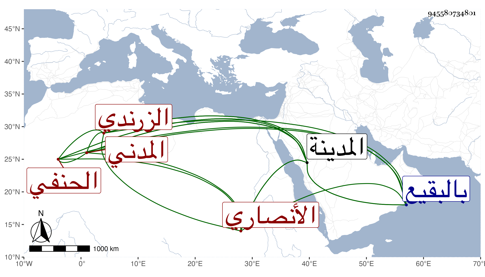

0902Sakhawi.DawLamic.ITO20230111-ara1.EIS1600.945580734801
Biography ID: 945580734801
313
محمد بن عبد الوهاب بن علي بن يوسف بن الحسن بن محمود فتح الدين أبو الفتح بن التاج الأنصاري الزرندي المدني الحنفي والد أحمد وسعد وسعيد وعبد الله ومحمد المذكورين في محالهم . حضر في سنة خمس وثمانين وسبعمائة على سليمان السقاء نسخة أبي مسهر وسمع على الأميوطي والبرهان بن فرحون وأجاز له البلقيني وابن الملقن والعراقي والهيثمي والدميري والحلاوي والسويداوي وغيرهم . ذكره التقي بن فهد في معجمه ، وولي قضاء المدينة وحسبتها بعد النجم يوسف بن محمد الزرندي بعد أن كان هو القائم بأعباء المنصب عنه . مات في ذي القعدة سنة ثمان وثلاثين بالمدينة النبوية ودفن بالبقيع واستقر بعده ابنه سعد .
